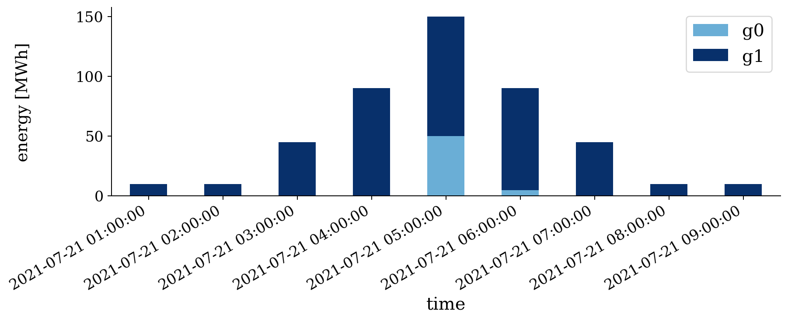

UC tries to schedule generation to meet the system load for the next several hours at lowest cost. UC adds a dimension of time to the ED problem, with the additional choice of turning generators on or off. The classic text is Wood & Wollenburg.
\(\min \sum_t \sum_g C_g(P_{t,g}) + C_{\mathrm{su} (g)}(u_{t,g})\)
\(\mathrm{s.t.} \; P_{\min (g)} \leq P_{t,g} \leq P_{\max (g)} \; \forall \; t,g \; \mathrm{where} \; u_{t,g}=1\)
\(\mathrm{s.t.} \; \sum_g P_{t,g}= P_{\mathrm{load}(t)} \; \forall \; t\)
\(\mathrm{s.t.} \; P_{\mathrm{ramp min} (g)} \leq P_{t,g}-P_{t-1,g} \leq P_{\mathrm{ramp max} (g)} \; \forall \; t,g\)
In this mathematical formulation generators are indexed by \(g\) and time is indexed by \(t\). \(P_{t,g}\) is a generator’s power output at time \(t\) and \(u_{t,g}\) is its operation status (on/off). \(C_g()\) is the generator’s production cost function and \(C_{\mathrm{su} (g)}()\) is its startup/shutdown cost. The objective is to minimize the total cost. The constraints are:
Note
The last constraint is not shown in the formulation above due to complexity. For the actual formulation in use, see powersystems.Generator.create_constraints().
To define a simple UC problem, Minpower requires at least three spreadsheets. The first describes the generator parameters (generators.csv):
"name";"Pmin";"Pmax";"heat rate equation";"fuel cost";"start up cost";"min up time";"min down time"
"g1";50;200;"220+9.9P";1.4;560;8;8
"g2";15;60;"80+10.1P";1.4;210;8;8
"g3";15;50;"60+10.8P";1.4;147;4;4
"g4";5;40;"40+11.9P";1.4;0;4;4
"g5";5;25;"34+12.14P";1.4;0;4;4
The second simply describes which loads exist on the system and where there schedule files are (loads.csv):
name,schedule filename
example,load-pattern.csv
The other spreadsheets describe the load (or non-controllable generation) energy schedules. In this case (load-pattern.csv):
time,power
0:00,250
2:00,320
4:00,110
6:00,75
Note
For more information about what options you can specify in each spreadsheet see: Creating a Problem.
Save the two spreadsheets above into into a folder (call it mycommitment) and run:
minpower mycommitment
This particular problem is also Minpower built-in test case (based on Wood & Wollenburg Problem 5.2), so if you haven’t been following along, to solve it, call:
minpower uc-WW-5-2
The result is a plot (commitment.png):

This figure has two axes that share the same time axis. The top axes shows the price of energy for the system. The bottom axes shows the energy that each generator produces.
Note
For only a few generators, results.Solution_UC.vizualization() displays a stack plot showing power for each generator. For more generators, the display is grouped by kind (so that all the coal plants as one color, all the wind as another color, ...).
For this example we have two generators, one named cheap (which produces energy for $45/MWh) and one named expensive (which produces energy for $150/MWh). Obviously we only turn on the expensive generator after we can’t use the cheaper any more (its limit is 100MW for this example). So as the load goes up and over 100MW, the expensive generator is committed.
But why doesn’t the expensive generator turn back off at 6:00, when the load goes back down? It can’t turn off that quickly - it has a minimum up time of 2hrs and a minimum output of 20MW. But why does the price go back down? It’s complicated [1].
The data from the graph is also output in spreadsheet form (commitment.csv):
times,prices,status: g1,power: g1,status: g2,power: g2,status: g3,power: g3,status: g4,power: g4,status: g5,power: g5,load power: example 2012-09-12 00:00:00,14.14,True,200.0,True,50.0,False,0.0,False,0.0,False,0.0,250 2012-09-12 02:00:00,16.996,True,200.0,True,60.0,False,0.0,True,40.0,True,20.0,320 2012-09-12 04:00:00,16.996,False,0.0,True,60.0,False,0.0,True,40.0,True,10.0,110 2012-09-12 06:00:00,16.996,False,0.0,True,60.0,False,0.0,False,0.0,True,15.0,75
Unlike ED and OPF results, this spreadsheet is not particularly easy to read. It is meant more for machines than for humans. The spreadsheet gives status and energy output for each generator, along with the system energy price, for each time.
Footnotes
| [1] | Generators at their limits can’t set the price. In the real world the monetary differences are dealt with via a system called “side payments”. In the example above a side payment of $105/MWh would be made to the more expensive generator for its second hour to make sure that it recovers its cost of operating for that hour. |